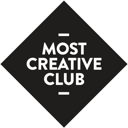

Vasil Kulakov
VP of Engineering | Former CTO & Head of Engineering | MBA
+49-178-268-90-16
vasily.kulakov@gmail.com
Munich, Bavaria — available for hybrid presence in any city in Germany

Engineering leader (VP / former CTO) with 20 years in software and 14 years of people management. MBA; Google Cloud Architect and DevOps certified. Based in Munich; available hybrid in any city in Germany.

“Committed to the goal even under a tight deadline — passionate about coding, with a calm, can-do attitude every company should be happy to have.”

“Exceptional as team lead and as a developer. He prioritised his team’s well-being and was always willing to go the extra mile.”

“Under his leadership the department grew from 5 to 15. He took the product to MVP quickly and established Agile/Scrum and a full delivery lifecycle.”

“An exceptional team leader who delivers high-quality projects on time and fosters a positive, inclusive team.”

MOST Creative Club